cut-in mattes, composited over a baked plate Every plate the runtime can show, over /Users/junshernchan/projects/multiplayer-rpg/public/assets/scenes/emb-cine/cameras/waystone/bg.png. A matte with a halo looks perfect on white and terrible on a night street, so this is the only honest place to judge one. Metrics are tools/cutin_edge.py; the gate is edge_noise≤0.12, halo≤+18, ramp≤3.5 px, speckle≤0.004, pinhole≤0.004. One row is one character — read it ACROSS for identity drift, which is invisible in a single plate and obvious in a row.
armorer studio · 1 plate rest PASS edge 0.093 · ramp 2.28 · halo +16.2 · speckle 0.0002 boatwright studio · 3 plates rest PASS edge 0.048 · ramp 3.24 · halo -16.6 · speckle 0.0000 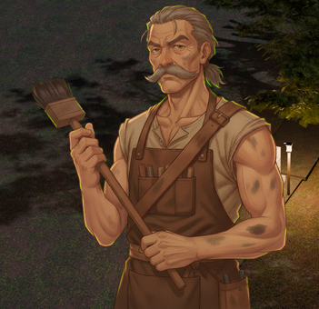
grave PASS edge 0.041 · ramp 3.13 · halo -13.8 · speckle 0.0000 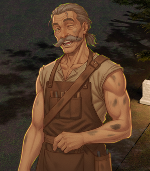
happy PASS edge 0.049 · ramp 3.16 · halo -24.2 · speckle 0.0000 chandler studio · 4 plates rest PASS edge 0.037 · ramp 2.57 · halo -50.9 · speckle 0.0000 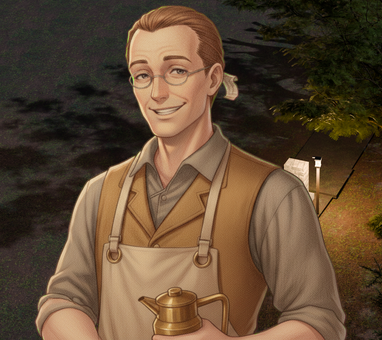
happy PASS edge 0.025 · ramp 2.60 · halo -39.3 · speckle 0.0000 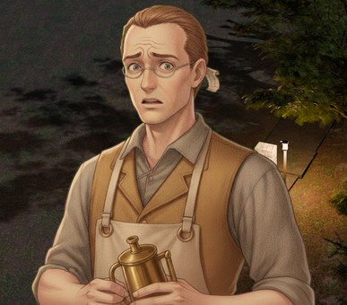
worried PASS edge 0.026 · ramp 2.63 · halo -37.6 · speckle 0.0000 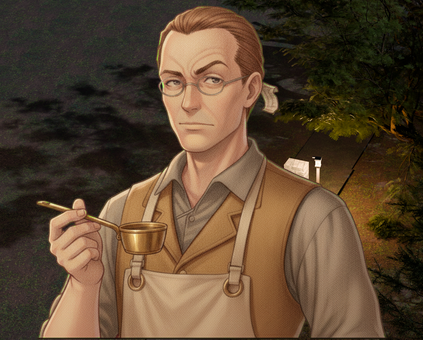
wry PASS edge 0.031 · ramp 2.61 · halo -46.2 · speckle 0.0000 child-boy studio · 3 plates rest PASS edge 0.012 · ramp 2.33 · halo -32.6 · speckle 0.0006 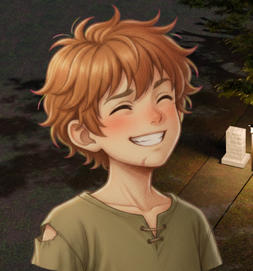
happy PASS edge 0.017 · ramp 2.33 · halo -30.3 · speckle 0.0014 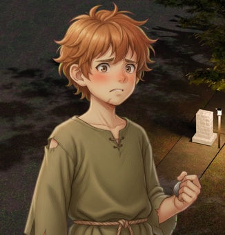
scared PASS edge 0.014 · ramp 2.39 · halo -28.8 · speckle 0.0002 child-girl studio · 3 plates rest PASS edge 0.007 · ramp 2.36 · halo -29.0 · speckle 0.0000 happy PASS edge 0.006 · ramp 2.47 · halo -27.3 · speckle 0.0000 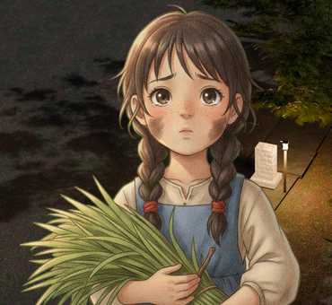
scared PASS edge 0.007 · ramp 2.51 · halo -27.3 · speckle 0.0000 creel studio · 1 plate rest PASS edge 0.060 · ramp 2.34 · halo -4.2 · speckle 0.0000 eelwife studio · 4 plates rest PASS edge 0.066 · ramp 2.21 · halo -64.8 · speckle 0.0000 happy PASS edge 0.068 · ramp 2.35 · halo -60.2 · speckle 0.0000 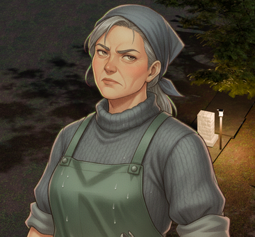
scowl PASS edge 0.070 · ramp 2.40 · halo -59.4 · speckle 0.0000 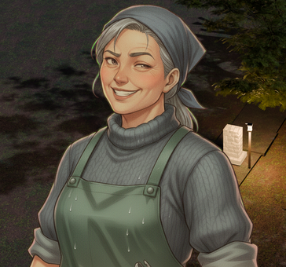
sly PASS edge 0.056 · ramp 2.23 · halo -61.8 · speckle 0.0000 elder-woman studio · 1 plate rest PASS edge 0.116 · ramp 2.61 · halo +8.4 · speckle 0.0012 finn studio · 4 plates rest PASS edge 0.113 · ramp 2.34 · halo -10.9 · speckle 0.0001 happy PASS edge 0.055 · ramp 2.22 · halo -4.3 · speckle 0.0000 hollow PASS edge 0.090 · ramp 2.26 · halo -7.7 · speckle 0.0001 puzzled PASS edge 0.079 · ramp 2.31 · halo -12.0 · speckle 0.0000 fisher studio · 1 plate rest FAIL edge_noise 0.261 > 0.120 edge 0.261 · ramp 3.48 · halo -2.2 · speckle 0.0024 hobb studio · 1 plate rest PASS edge 0.109 · ramp 2.33 · halo +2.6 · speckle 0.0012 innkeeper studio · 3 plates rest PASS edge 0.049 · ramp 2.99 · halo -10.3 · speckle 0.0000 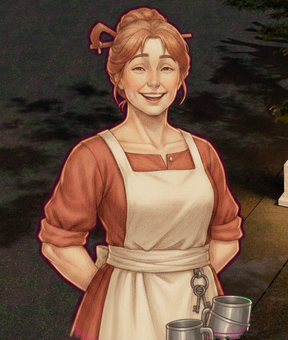
happy PASS edge 0.084 · ramp 2.11 · halo -50.3 · speckle 0.0000 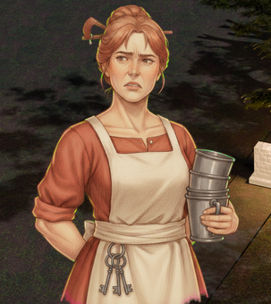
worried PASS edge 0.044 · ramp 3.20 · halo -9.8 · speckle 0.0000 lake studio · 12 plates rest PASS edge 0.013 · ramp 2.41 · halo -9.7 · speckle 0.0000 annoyed PASS edge 0.013 · ramp 2.39 · halo -11.1 · speckle 0.0000 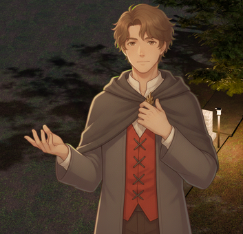
determined PASS edge 0.015 · ramp 2.26 · halo -18.4 · speckle 0.0000 happy PASS edge 0.015 · ramp 2.41 · halo -17.5 · speckle 0.0000 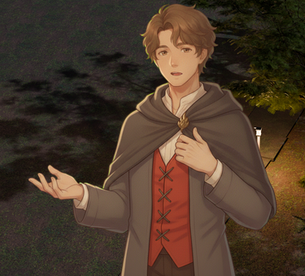
hollow PASS edge 0.015 · ramp 2.39 · halo -19.0 · speckle 0.0000 sad PASS edge 0.017 · ramp 2.44 · halo -14.7 · speckle 0.0000 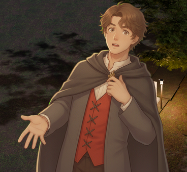
surprised PASS edge 0.009 · ramp 2.52 · halo -23.3 · speckle 0.0000 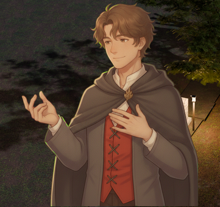
tender PASS edge 0.011 · ramp 2.39 · halo -7.2 · speckle 0.0000 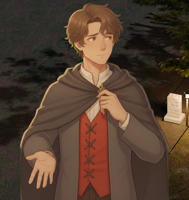
thinking PASS edge 0.018 · ramp 2.56 · halo -5.9 · speckle 0.0000 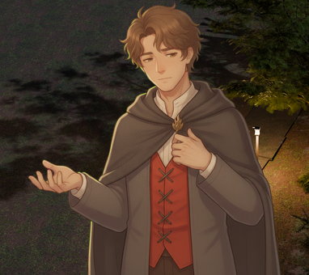
weary PASS edge 0.011 · ramp 2.48 · halo -17.7 · speckle 0.0000 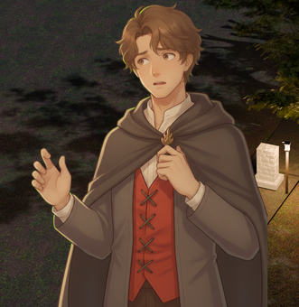
worried PASS edge 0.009 · ramp 2.57 · halo -13.8 · speckle 0.0000 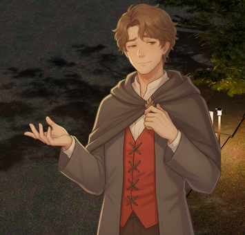
wry PASS edge 0.014 · ramp 2.39 · halo -17.8 · speckle 0.0000 mara studio · 4 plates rest PASS edge 0.045 · ramp 1.78 · halo -16.6 · speckle 0.0001 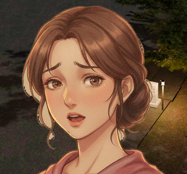
distressed PASS edge 0.032 · ramp 1.75 · halo -12.4 · speckle 0.0000 happy PASS edge 0.049 · ramp 1.81 · halo -13.0 · speckle 0.0000 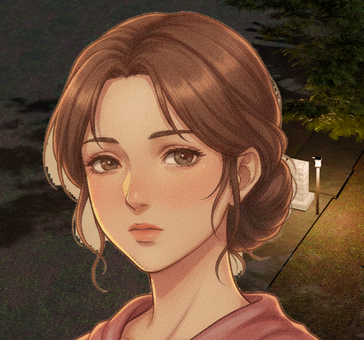
hollow PASS edge 0.038 · ramp 1.78 · halo -12.4 · speckle 0.0000 maren studio · 13 plates rest PASS edge 0.023 · ramp 2.11 · halo -18.0 · speckle 0.0000 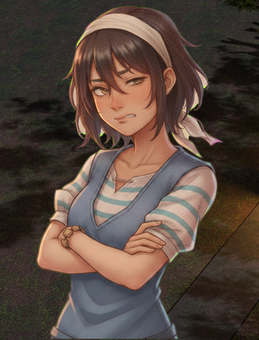
annoyed PASS edge 0.007 · ramp 1.92 · halo -12.2 · speckle 0.0000 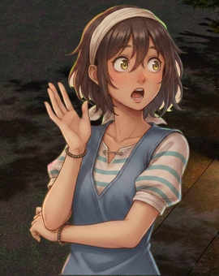
awed PASS edge 0.007 · ramp 1.86 · halo -14.4 · speckle 0.0001 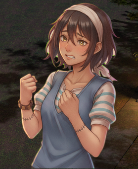
crushed PASS edge 0.017 · ramp 2.05 · halo -16.9 · speckle 0.0000 determined PASS edge 0.025 · ramp 2.17 · halo -19.4 · speckle 0.0000 happy PASS edge 0.014 · ramp 1.96 · halo -19.3 · speckle 0.0001 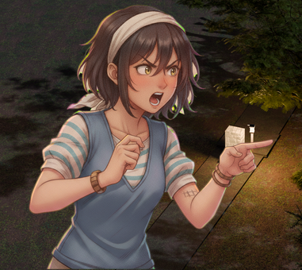
indignant PASS edge 0.023 · ramp 2.12 · halo -15.1 · speckle 0.0000 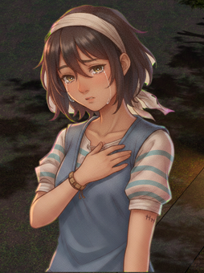
sad PASS edge 0.017 · ramp 2.08 · halo -14.7 · speckle 0.0000 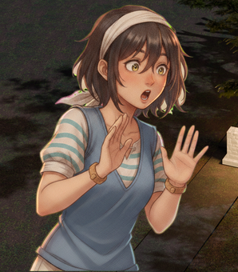
surprised PASS edge 0.015 · ramp 1.96 · halo -18.5 · speckle 0.0000 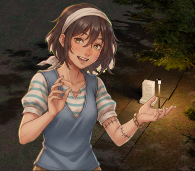
tender PASS edge 0.006 · ramp 1.86 · halo -15.7 · speckle 0.0000 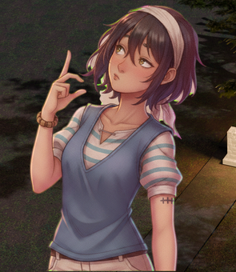
thinking PASS edge 0.026 · ramp 2.21 · halo -16.1 · speckle 0.0000 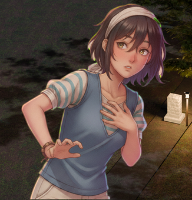
worried PASS edge 0.029 · ramp 2.14 · halo -14.2 · speckle 0.0000 wry PASS edge 0.015 · ramp 1.85 · halo -21.6 · speckle 0.0000 mochi studio · 1 plate rest FAIL halo +37.5 > +18 edge 0.108 · ramp 2.45 · halo +37.5 · speckle 0.0022 nib studio · 4 plates rest PASS edge 0.054 · ramp 3.05 · halo -32.3 · speckle 0.0000 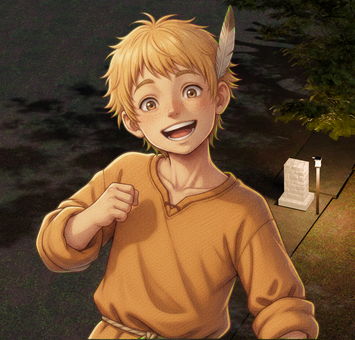
happy PASS edge 0.056 · ramp 2.93 · halo -30.3 · speckle 0.0000 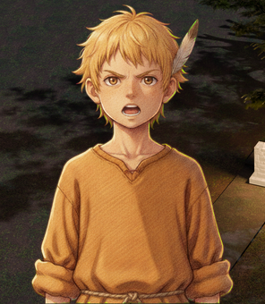
indignant PASS edge 0.048 · ramp 3.14 · halo -28.8 · speckle 0.0000 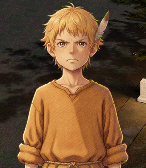
scared PASS edge 0.046 · ramp 3.11 · halo -28.6 · speckle 0.0000 odessa studio · 3 plates rest FAIL halo +30.9 > +18 edge 0.006 · ramp 1.85 · halo +30.9 · speckle 0.0001 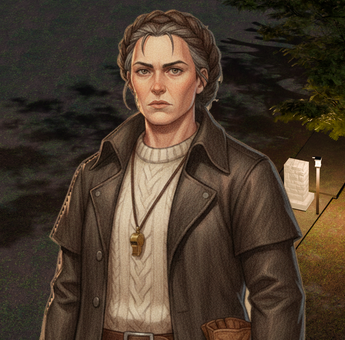
grave FAIL halo +40.1 > +18 edge 0.015 · ramp 1.80 · halo +40.1 · speckle 0.0000 warm FAIL halo +35.5 > +18 edge 0.003 · ramp 1.81 · halo +35.5 · speckle 0.0001 pell studio · 3 plates rest PASS edge 0.059 · ramp 2.80 · halo -50.3 · speckle 0.0000 tired PASS edge 0.054 · ramp 2.72 · halo -46.1 · speckle 0.0000 wry PASS edge 0.049 · ramp 2.73 · halo -43.9 · speckle 0.0000 pip studio · 4 plates rest PASS edge 0.072 · ramp 1.88 · halo -11.5 · speckle 0.0000 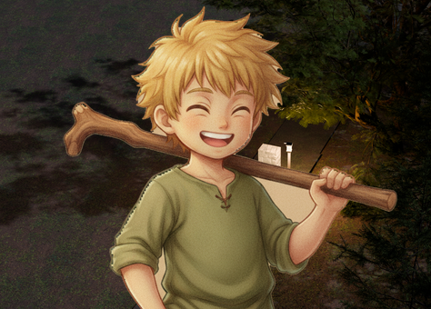
happy PASS edge 0.050 · ramp 1.81 · halo -7.1 · speckle 0.0000 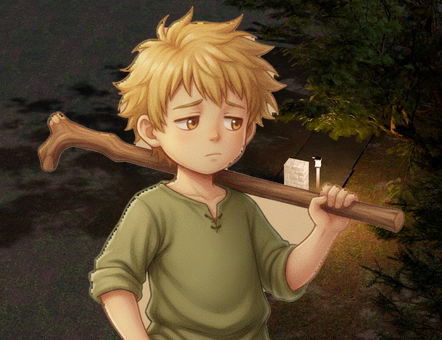
hollow PASS edge 0.041 · ramp 1.79 · halo -4.4 · speckle 0.0000 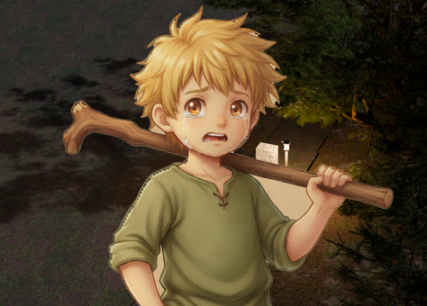
scared PASS edge 0.059 · ramp 1.84 · halo -5.7 · speckle 0.0000 poppy studio · 7 plates rest PASS edge 0.015 · ramp 2.39 · halo -18.1 · speckle 0.0000 happy PASS edge 0.015 · ramp 2.43 · halo -12.7 · speckle 0.0000 hollow PASS edge 0.023 · ramp 2.68 · halo -15.1 · speckle 0.0000 laughing PASS edge 0.020 · ramp 2.67 · halo -21.3 · speckle 0.0000 stern PASS edge 0.016 · ramp 2.56 · halo -13.9 · speckle 0.0000 tender PASS edge 0.019 · ramp 2.52 · halo -13.2 · speckle 0.0000 worried PASS edge 0.016 · ramp 2.60 · halo -16.8 · speckle 0.0000 rowan studio · 4 plates rest PASS edge 0.047 · ramp 1.84 · halo +12.6 · speckle 0.0000 grave PASS edge 0.044 · ramp 1.84 · halo +11.6 · speckle 0.0000 happy PASS edge 0.033 · ramp 1.81 · halo +16.1 · speckle 0.0000 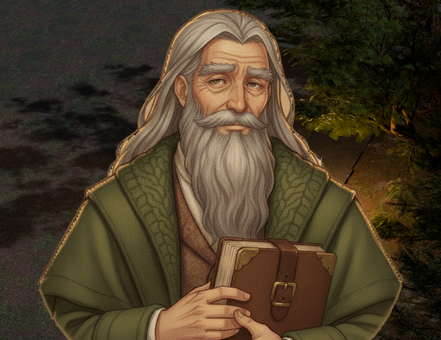
hollow PASS edge 0.036 · ramp 1.86 · halo +13.1 · speckle 0.0000 sorrel studio · 1 plate rest FAIL edge_noise 0.322 > 0.120; ramp 3.53 > 3.5 px edge 0.322 · ramp 3.53 · halo +5.1 · speckle 0.0003 tally studio · 4 plates rest FAIL edge_noise 0.153 > 0.120 edge 0.153 · ramp 2.15 · halo +5.3 · speckle 0.0003 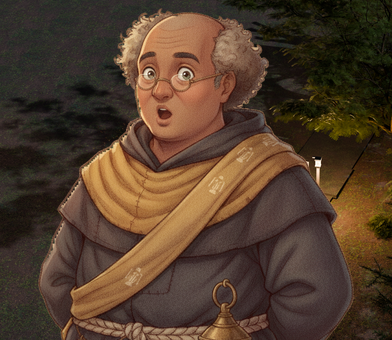
awed PASS edge 0.094 · ramp 1.92 · halo +7.7 · speckle 0.0000 earnest PASS edge 0.110 · ramp 1.93 · halo +4.9 · speckle 0.0000 happy PASS edge 0.111 · ramp 1.96 · halo +8.7 · speckle 0.0001 vesper studio · 10 plates rest PASS edge 0.052 · ramp 2.03 · halo -4.5 · speckle 0.0000 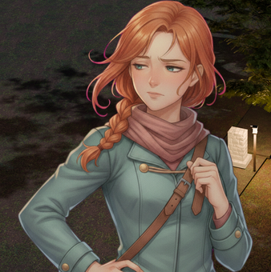
annoyed PASS edge 0.001 · ramp 1.82 · halo +0.7 · speckle 0.0000 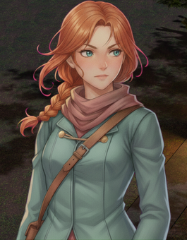
determined PASS edge 0.057 · ramp 2.03 · halo -5.2 · speckle 0.0000 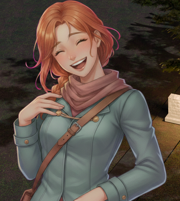
happy PASS edge 0.002 · ramp 1.98 · halo -1.5 · speckle 0.0000 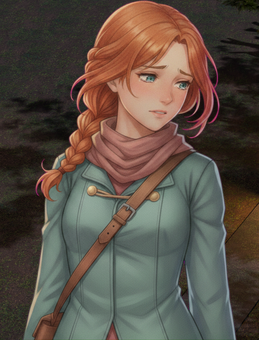
sad PASS edge 0.061 · ramp 2.13 · halo +0.4 · speckle 0.0000 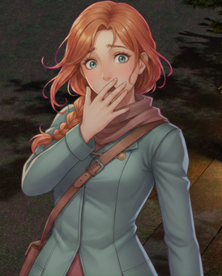
surprised PASS edge 0.050 · ramp 2.02 · halo -2.8 · speckle 0.0000 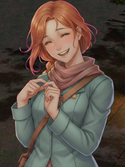
tender PASS edge 0.045 · ramp 2.08 · halo +0.1 · speckle 0.0000 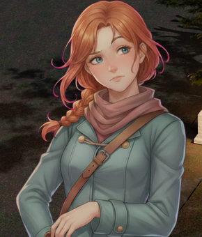
thinking PASS edge 0.011 · ramp 2.16 · halo +1.4 · speckle 0.0000 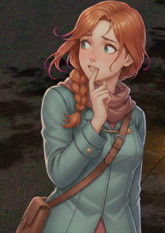
worried PASS edge 0.058 · ramp 2.17 · halo +7.0 · speckle 0.0000 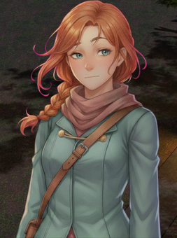
wry PASS edge 0.053 · ramp 2.17 · halo -3.3 · speckle 0.0000 villager-man studio · 3 plates rest PASS edge 0.067 · ramp 3.13 · halo -19.2 · speckle 0.0000 happy PASS edge 0.057 · ramp 3.13 · halo -16.0 · speckle 0.0000 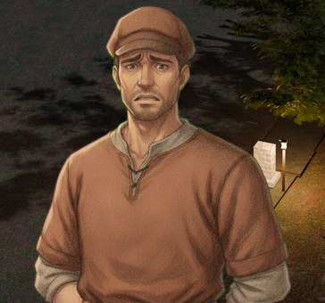
worried PASS edge 0.055 · ramp 3.10 · halo -15.5 · speckle 0.0000 villager-woman studio · 2 plates rest PASS edge 0.010 · ramp 2.06 · halo -49.1 · speckle 0.0000 worried PASS edge 0.109 · ramp 2.82 · halo -93.2 · speckle 0.0000 weaponsmith studio · 1 plate rest PASS edge 0.029 · ramp 1.97 · halo -1.4 · speckle 0.0000